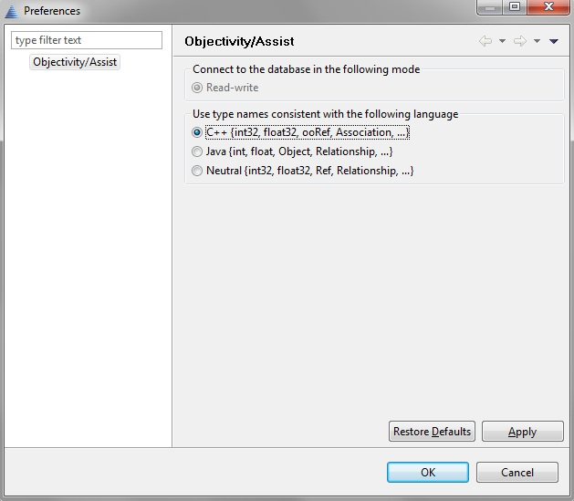

Setting Up
Before you begin
Make sure you completed your installation of Objectivity/C++. For details, see the
installation and configuration documentation on the Objectivity Developer Network.
Setting up Objectivity/Assist for C++ development
To set up Objectivity/Assist for C++ development:
|
1.
|
From the Objectivity/Assist main window, select Window > Preferences.
|
|
2.
|
In the Preferences dialog, click on Objectivity/Assist, select C++, and click OK.
|

Pre-build instructions in project files
The Visual C++ project files for most of the tutorial examples include pre-build instructions that set up an Objectivity federated database and apply schema updates to that database. The instructions use the Tool Runner command createfd to create the federated database and use the DDL processor (ooddlx) to apply schema updates to the newly created federated database. Finally, the Tool Runner command exportplacement is use to export the default placement model. You can find detailed information about the Tool Runner in "Chapter 19: Tool Runner" of the Objectivity/DB Administration Guide.
Important: If you are not using Visual Studio you will need to run the following commands from the command line manually or by creating a script.
You can optionally inspect these pre-build instructions in the configuration properties in your Visual C++ IDE. You do not need to modify these instructions in order to build and run the examples.
Note: The pre-build instructions used by the examples vary slightly according to the version of the Visual C++ IDE to which they apply. The following sections show the pre-build instructions for Visual C++ 10.0.
Pre-build instructions for creating the federated database
The following show the pre-build instructions that check for the presence of a federated database, clean up any of its transactions, and delete it if necessary, then recreate a new one.
Commands:
if exist $(ProjectDir)data\SystemName.boot oocleanup -local $(ProjectDir)data\SystemName.boot
if exist $(ProjectDir)data\SystemName.boot oodeletefd -f $(ProjectDir)data\SystemName.boot
objy createfd -fdname SystemName -fddirpath "$(ProjectDir)data" -lockserverhost $(COMPUTERNAME)
Outputs:
$(ProjectDir)data\SystemName.fdb
$(ProjectDir)data\SystemName.boot
Pre-build instructions for applying schema changes
The following show the pre-build instructions that apply schema changes to the federated database using the DDL processor.
Commands:
ooddlx $(ProjectDir)ddlFiles\ClassName.ddl $(ProjectDir)data\SystemName.boot
Outputs:
$(ProjectDir)ddlFiles\ClassName.h
$(ProjectDir)ddlFiles\ClassName_ddl.cpp
$(ProjectDir)ddlFiles\ClassName_ref.h
Note: For more detailed information see "Setting Up the Visual C++ IDE" and "Adding a Pre-Build Event to Create a Federation" in the
installation and configuration documentation.